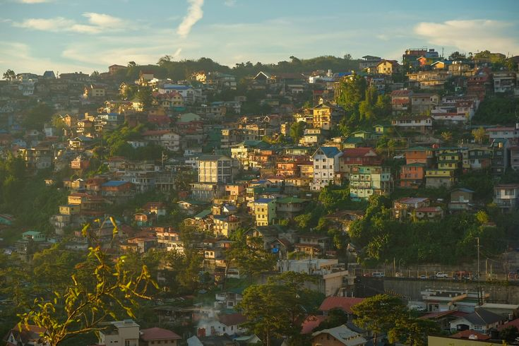

About Me
Hi, I'm Jenny Joy Latagan, a passionate student currently enrolled in the BS Computer Science program with a specialization in Software Engineering at Lyceum of the Philippines University – Cavite. I am an ambitious young woman, driven by a desire to become an excellent software engineer. My goal is to harness the power of technology to help others and reveal the beauty and potential of the digital world.
This website is my way of sharing the wonders of the Philippines with the world. Through this blog, I hope to inspire others to explore the incredible beauty of our country—from its pristine beaches to its stunning natural landscapes. I aim to highlight not only the famous landmarks but also the hidden gems that make the Philippines such a unique and extraordinary destination.
The Philippines is a country full of diversity and rich cultural heritage, and my mission is to showcase this in the most vibrant and authentic way possible. Through this platform, I aim to provide insights, tips, and stories that will encourage travelers to experience the magic of the Philippines firsthand. Join me on this journey as we uncover the beauty of this archipelago, one destination at a time.